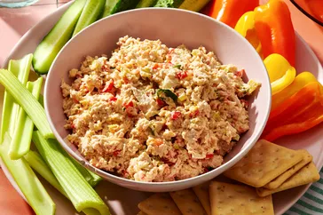

Turkey Salad Recipe
Home

Description
This turkey salad recipe makes a creamy spread for crackers or filling for sandwiches.
It's an easy and delicious way to use leftover turkey after Thanksgiving!
Ingredients
- Turkey: This simple recipe starts with tender cooked turkey meat.
- Vegetables: You’ll need celery, green onions, and a red bell pepper.
- Mayo and mustard: Mayonnaise and prepared Dijon-style mustard add creaminess and flavor.
- Apple cider vinegar: Apple cider vinegar lends a touch of welcome acidity.
- Sugar: A teaspoon of white sugar adds a hint of sweetness.
- Salt: A pinch of salt enhances the overall flavor of the turkey salad.
Steps
- Pulse the turkey and vegetables in a food processor until finely chopped.
- Transfer to a bowl, then mix in the remaining ingredients.
- Cover and chill in the fridge for eight hours to allow the flavors to meld.